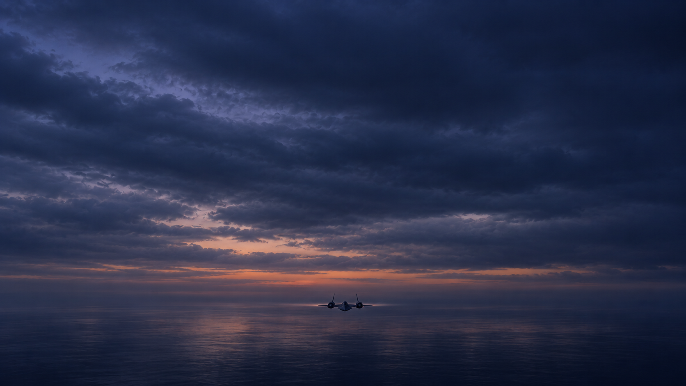
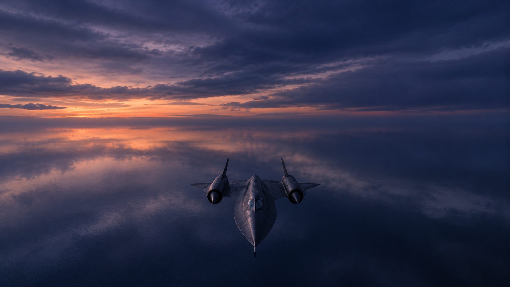
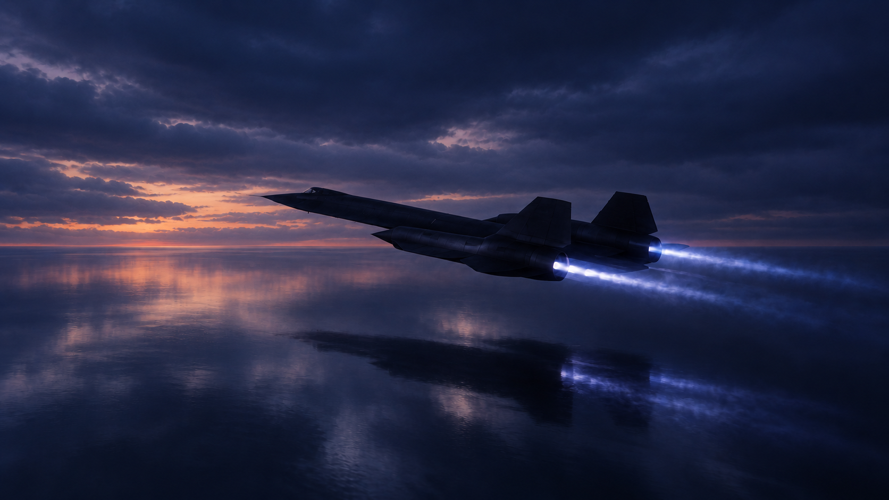

WORKING PREVIS · 2D SCHEMATIC · NO NEW VIDEO GENERATION
Low flight → side hold → climb → light
Separate the aircraft’s flight path from the camera’s position and gaze. These diagrams show blocking, not the projected picture. Forward is always to the right; the aircraft never slides sideways.
The hold is exact in this sketch; other beats share the remaining preview time. Softness is a schematic delay, not a calibrated production damping value. Height changes the diagram, not the fixed reference photos.
▲ Aircraft · flight path■ Camera · path / dashed gaze
Top view — sideways separation
Side view — height and climb
Composition anchors

1 · Elevated distance
Tiny aircraft, near-level aim, sky dominant.

2 · Nose becomes legible
Above the flight path. Current image looks down more strongly than the near-level target.

3 · Side-track hold
Preferred angle; smooth clouds, blue-purple, subtle warm seam.
Quick continuation sketches
4 · Camera lets it rise away
5 · Arc behind, remain above
6 · Exhausts grow toward frame
7 · Light overtakes the image
Catch-up is a proposed stylized camera move: after lagging, the camera must gain on the aircraft to make the exhausts larger. A lens push or bloom is an alternative. The fade swatch proposes a palette; it does not simulate the final effect.
Full directing notes and shot decisions · Exact still prompts